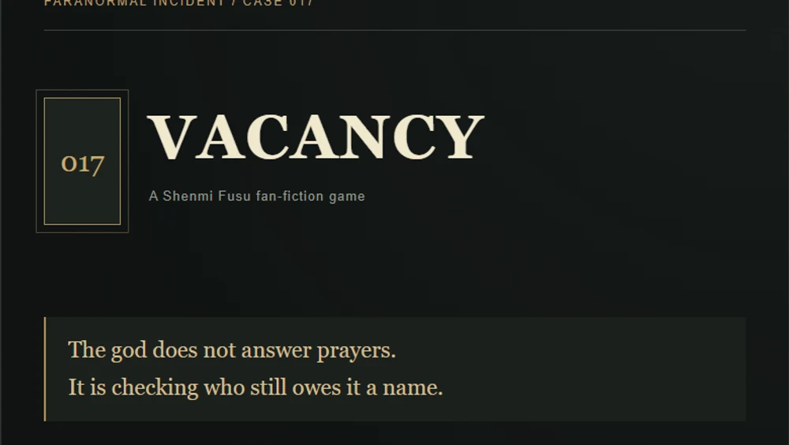
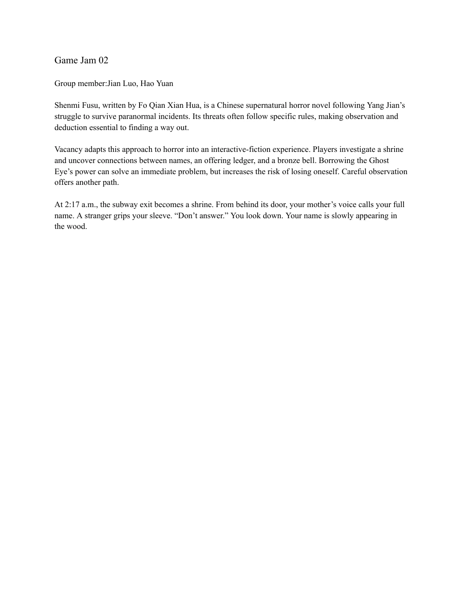
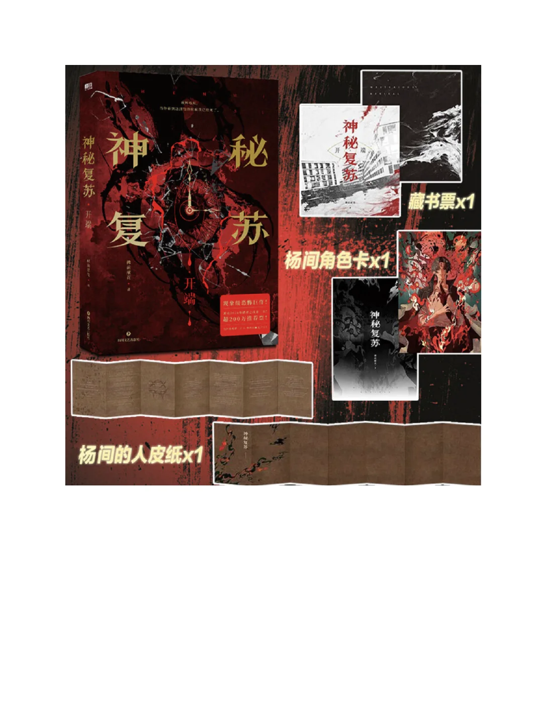
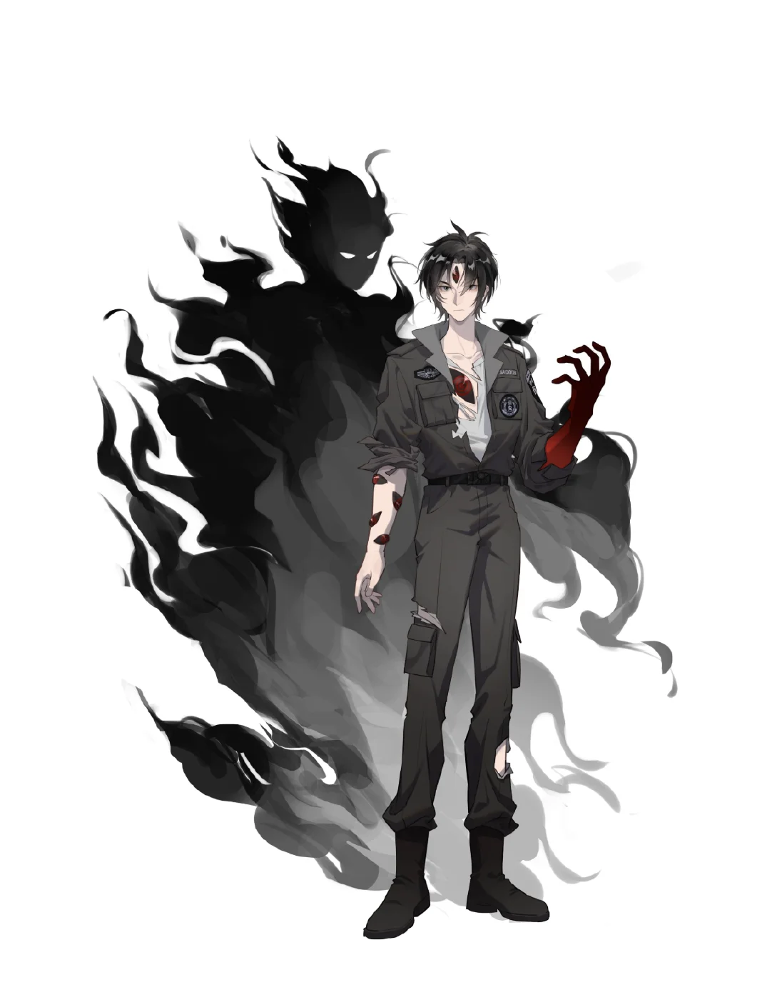

The inspiration
Shenmi Fusu, written by Fo Qian Xian Hua, follows Yang Jian’s struggle to survive paranormal incidents. Its threats often follow specific rules, making observation and deduction essential to finding a way out.
GAME JAM 02 · INTERACTIVE FICTION
The god does not answer prayers.
Investigate a shrine that should not exist. Learn its rules, weigh the cost of borrowed power, and decide what it means to fight a god.

01 / CONCEPT
Shenmi Fusu, written by Fo Qian Xian Hua, follows Yang Jian’s struggle to survive paranormal incidents. Its threats often follow specific rules, making observation and deduction essential to finding a way out.
Vacancy turns this approach to horror into an original fan-fiction scenario. Players investigate connections between names, an offering ledger, and a bronze bell. The Ghost Eye offers immediate help, but every use brings the risk of losing oneself closer.
At 2:17 a.m., the subway exit becomes a shrine. From behind its door, your mother’s voice calls your full name. A stranger grips your sleeve. “Don’t answer.”
Read the room, collect clues, and uncover the rules at your own pace. There is no countdown.
Use the Ghost Eye for a dangerous shortcut, or find a solution through observation. Its third use causes a takeover.
Attack, escape, take the throne, or use the entity’s own rules to contain it. Your decisions shape the outcome.
02 / PLAY
Play the complete English game below, or open it in its own window. Click choices to continue; use the undo arrow to revisit a choice.
Content: supernatural horror, death, and loss of identity. No sudden audio or timed choices.
03 / PROJECT DOCUMENTATION
The three-page group document introduces the literary inspiration, the game concept, and visual references. The original PDF is preserved in full.



Group members: Jian Luo and Hao Yue. Inspired by Shenmi Fusu by Fo Qian Xian Hua. Vacancy is an unofficial fan-fiction prototype with an original incident and cast. Prototype writing, implementation, and English adaptation were developed with AI assistance.
The source file can be edited with compatible Twee tools. To edit in the Twine story library, import the downloaded game HTML.
Download editable sourceLiterary reference ↗GAME JAM 02 · INTERACTIVE FICTION
神不回应祈祷。
调查一座不该存在的祠堂。发现它的规则，权衡借用力量的代价，并决定如何挑战这里的神。
01 / CONCEPT
佛前献花的《神秘复苏》围绕杨间在灵异事件中的求生经历展开。危险往往遵循特定规律，观察和推理成为寻找生路的重要方式。
《空位》将这种恐怖体验转化为原创同人事件。玩家调查名字、祭簿与铜铃的联系。鬼眼能解决眼前的问题，但每次使用都会让失去自我的风险更近一步。
凌晨两点十七分，地铁出口变成了一座祠堂。门后传来母亲的声音，叫出了你的全名。一个陌生人抓紧你的衣袖：“别回答。”
阅读环境、收集线索，按照自己的节奏理解规则。没有倒计时。
使用鬼眼走危险的捷径，或通过观察找到解法。第三次使用会导致失控。
攻击、逃离、接替神位，或利用厉鬼自己的规则完成关押。选择决定结局。
02 / PLAY
在下方游玩完整英文版，也可以在独立窗口打开。点击选项推进，用撤回箭头返回上一步。
内容包含灵异、死亡与身份丧失描写。无突发音效，无限时选择。
03 / PROJECT DOCUMENTATION
这份三页小组文档介绍了原作灵感、游戏概念与视觉参考。完整原 PDF 已保留，可在线阅读或下载。
小组成员：Jian Luo、Hao Yue。灵感来源：佛前献花《神秘复苏》。《空位》为非官方同人原型，事件与人物为原创。原型写作、实现与英文改编使用了 AI 辅助。
源码可使用兼容 Twee 的工具编辑。如使用 Twine 故事库，请导入下载的游戏 HTML。
下载可编辑源码原作参考 ↗